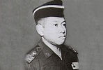
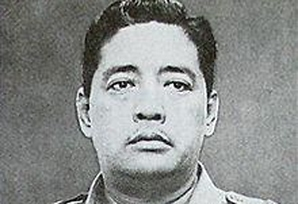
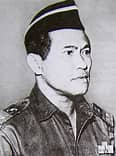
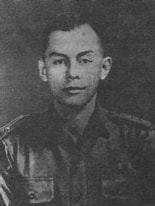
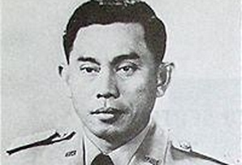
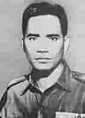
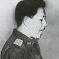
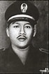
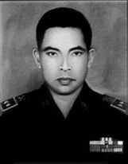

1 Oktober merupakan hari kesaktian pancasila, pada hari kesaktian pancasila diselenggarakan sebagai cara mengenang para jasa pahlawan REVOLUSI yang gugur dalam peristiwa G30S/PKI, dalam peristiwa ini para pahlawan revolusi diculik, disiksa, dan dimasukan kedalam sumur. yang sekarang ini sumur tersebut biasa disebut dengan lubang buaya. berikut adalah nama-nama pahlawan revolusi:
| NO | FOTO | NAMA | TEMPAT/TANGGAL LAHIR |
|---|---|---|---|
| 1 |  | Letnan Jenderal TNI (Anumerta) Siswondo Parman | Wonosobo, 14 Agustus 1918. |
| 2 |  | Letnan Jenderal TNI (Anumerta) Raden Suprapto | Purwokerto, 20 Juni 1920. |
| 3 |  | Letnan Jenderal TNI (Anumerta) Mas Tirtodarmo Haryono | Surabaya, 20 Januari 1924. |
| 4 |  | Kapten Czi. (Anumerta) Pierre Andreas Tendean | Jakarta, pada 21 Februari 1939. |
| 5 |  | Jenderal TNI (Anumerta) Ahmad Yani | Purworejo, 19 Juni 1922. |
| 6 |  | Brigjen D.I Panjaitan | Tapanuli, 9 Juni 1925. |
| 7 |  | Mayjen Sutoyo Siswomiharjo | Kebumen, 28 Agustus 1922. |
| 8 |  | Brigadir Jenderal TNI (Anumerta) Katamso Darmokusumo | 5 Februari 1923. |
| 9 |  | Kolonel (Anumerta) Sugiyono Mangunwiyoto | 12 Agustus 1926. |
| 10 |  |
Ajun Inspektur Polisi Dua (Anumerta) Karel Sadsuitubun | 14 Oktober 1928. |